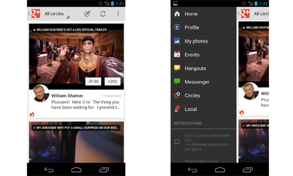
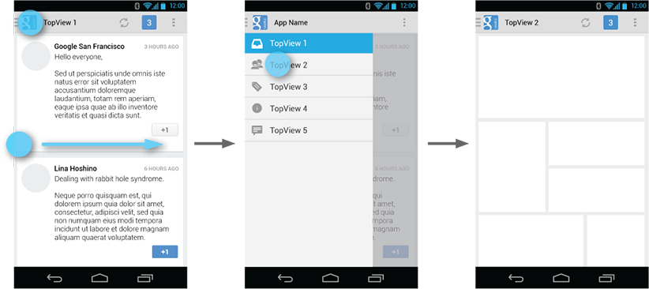
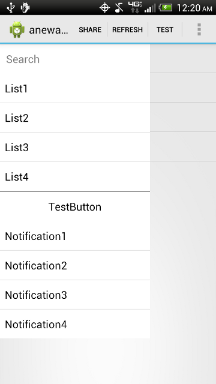
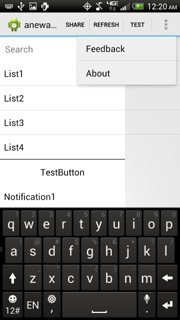

Does anyone know how to implement a sliding menu like some of the top apps of
today?
Other Stack Overflow questions haven't had any answers on how to do this, so
I'm trying to gather as much info to help out others. All the applications I
mention below do a great job of implementing the slide menu.
1. Google Plus (as of 7/7/12)

You can only go from the first screen to the second screen by clicking the G+
logo in the upper left hand corner. Notice that the entire screen moves from
it's position and get's nudged to the right side of the screen (including the
action bar). To get back to the first screen you can either slide the right
side back into focus or you can click the G+ icon again.
2. YouTube (as of 7/7/12)

You can go from the first screen to second screen using two methods. Either
click the YouTube logo in the upper left, or you can use a swipe gesture to
move it to the right. This is already different from the G+ app. Secondly, you
can see that the action bar stays put (Unlike G+). Lastly, to get the original
screen back it works just like G+.
Answer
Edit #3:
The Navigation Drawer pattern is officially described in the Android
documentation!
 Check out the following
links:
-
Design docs can be found here.
-
Developer docs can be found here.
Edit #2:
Roman Nurik (an Android design engineer at Google) has confirmed that the
recommended behavior is to not move the Action Bar when opening the drawer
(like the YouTube app). See this Google+ post.
Edit #1:
I answered this question a while ago, but I'm back to re-emphasize that
Prixing has the best fly-out menu out there... by far. It's absolutely
beautiful, perfectly smooth, and it puts Facebook, Google+, and YouTube to
shame. EverNote is pretty good too... but still not as perfect as Prixing.
Check out this series of posts on how the flyout menu was implemented
(from none other than the head developer at Prixing himself!).
Original Answer:
Adam Powell and Richard Fulcher talk about this at 49:47 - 52:50 in the Google
I/O talk titled "Navigation in Android".
To summarize their answer, as of the date of this posting the slide out
navigation menu is not officially part of the Android application design
standard. As you have probably discovered, there's currently no native support
for this feature, but there was talk about making this an addition to an
upcoming revision of the support package.
With regards to the YouTube and G+ apps, it does seem odd that they behave
differently. My best guess is that the reason the YouTube app fixes the
position of the action bar is,
-
One of the most important navigational options for users using the YouTube app is search, which is performed in the SearchView in the action bar. It would make sense to make the action bar static in this regard, since it would allow the user to always have the option to search for new videos.
-
The G+ app uses a ViewPager to display its content, so making the pull out menu specific to the layout content (i.e. everything under the action bar) wouldn't make much sense. Swiping is supposed to provide a means of navigating between pages, not a means of global navigation. This might be why they decided to do it differently in the G+ app than they did in the YouTube app.
On another note, check out the Google Play app for another version of the
"pull out menu" (when you are at the left most page, swipe left and a pull
out, "half-page" menu will appear).
You're right in that this isn't very consistent behavior, but it doesn't seem
like there is a 100% consensus within the Android team on how this behavior
should be implemented yet. I wouldn't be surprised if in the future the apps
are updated so that the navigation in both apps are identical (they seemed
very keen on making navigation consistent across all Google-made apps in the
talk).
Suggest
Just recently I forked a current Github project called "RibbonMenu" and edited
it to fit my needs:
https://github.com/jaredsburrows/RibbonMenu
What's the Purpose
- Ease of Access: Allow easy access to a menu that slides in and out
- Ease of Implementation: Update the same screen using minimal amount of code
- Independency: Does not require support libraries such as ActionBarSherlock
- Customization: Easy to change colors and menus
What's New
- Changed the sliding animation to match Facebook and Google+ apps
- Added standard ActionBar (you can chose to use ActionBarSherlock)
- Used menuitem to open the Menu
- Added ability to update ListView on main Activity
- Added 2 ListViews to the Menu, similiar to Facebook and Google+ apps
- Added a AutoCompleteTextView and a Button as well to show examples of implemenation
- Added method to allow users to hit the 'back button' to hide the menu when it is open
- Allows users to interact with background(main ListView) and the menu at the same time unlike the Facebook and Google+ apps!
ActionBar with Menu out

ActionBar with Menu out and search selected
